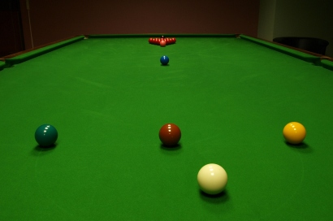
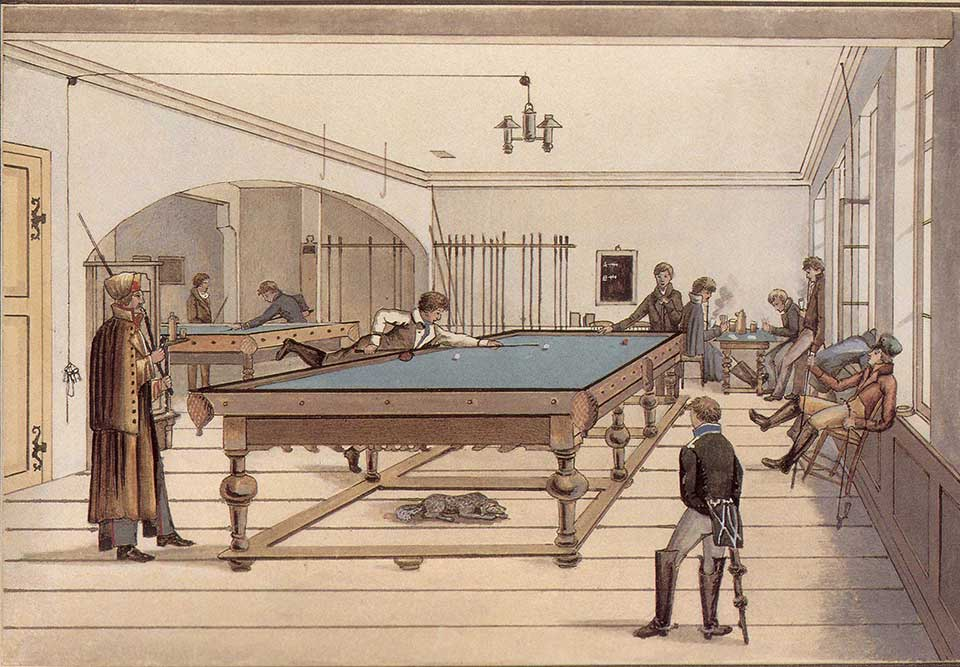
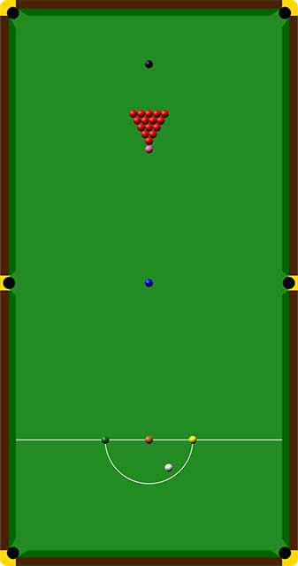
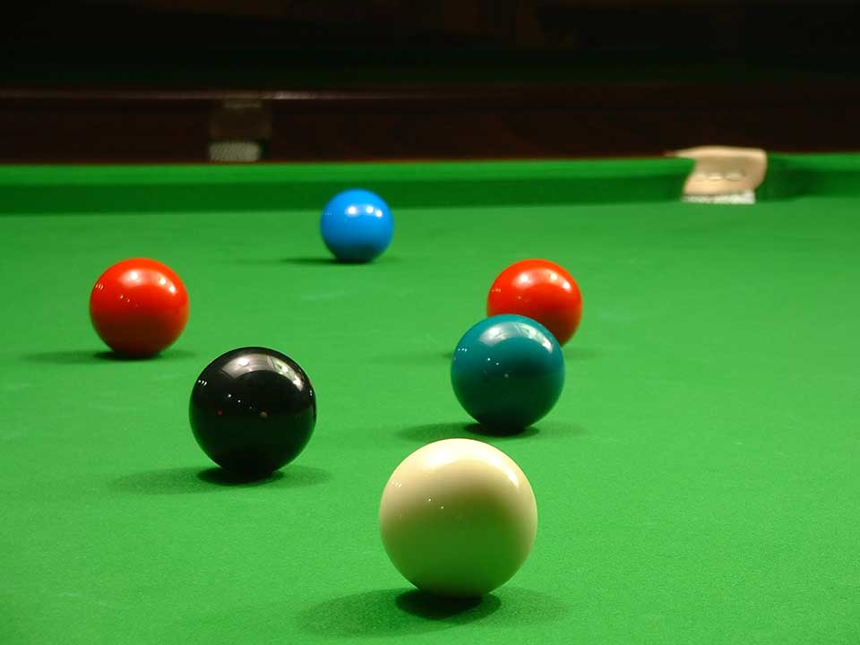
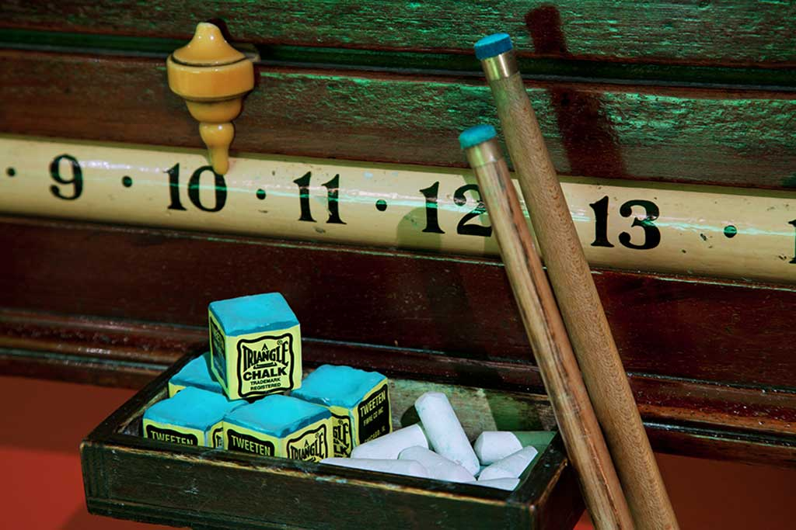

Fig.1 Snooker table start positionSnooker (UK /ˈsnuːkər/, US /ˈsnʊkər/)[2][3] is a cue sport played on a table covered with a green cloth or baize, with pockets at each of the four corners and in the middle of each of the long side cushions. A full-size table measures 11 ft 8 1⁄2 in × 5 ft 10 in (3569 mm x 1778 mm), commonly referred to as 12 × 6 ft.
The game is played using a cue and 22 snooker balls: one white cue ball, 15 red balls worth one point each, and six balls of different colours: yellow (two points), green (three), brown (four), blue (five), pink (six) and black (seven).[4] The red balls are initially placed in a triangular formation, and the other coloured balls on marked positions on the table known as "spots". Players execute shots by striking the cue ball with the cue, causing the cue ball to hit a red or coloured ball. Points are scored by sinking the red and coloured balls (knocking them into the pockets, called "potting") in the correct sequence. A player receives additional points if the opponent commits a foul. A player (or team) wins a frame (individual game) of snooker by scoring more points than the opponent(s). A player wins a match when a predetermined number of frames have been won.
Snooker, generally regarded as having been invented in India by British Army officers, is popular in many of the English-speaking and Commonwealth countries,[5] with top professional players attaining multimillion-pound career earnings from the game.[6] The sport has become increasingly popular in China.[7] Touring professional players compete regularly around the world, the premier tournament being the World Snooker Championship, held annually in Sheffield, England.
History

Fig.2 Illustration of a game of three ball pocket billiards in early 19th-century Tübingen, Germany
Snooker in its modern form originated in the latter half of the 19th century.[8] Billiards had been a popular activity amongst British Army officers stationed in India, and variations on the more traditional billiard games were devised. One variation, devised in the officers' mess in Jabalpur during 1874 or 1875,[8] was to add coloured balls in addition to the reds and black which were used for pyramid pool and life pool.[9] The rules were formally finalised in 1884 by Sir Neville Chamberlain at Ooty.[citation needed] The word snooker also has military origins, being a slang term for first-year cadets and inexperienced personnel.[8] One version of events states that Chamberlain, of the Devonshire regiment, was playing this new game when his opponent failed to pot a ball and Chamberlain called him a snooker.[9] It thus became attached to the billiards game now bearing its name as inexperienced players were labelled as "snookers".[10]
Snooker grew in popularity in the United Kingdom but generally it was still a game for the gentry, and many well established gentlemen's clubs which had a billiards table would not allow non-members inside to play. To accommodate the popularity of the game, smaller and more open snooker-specific clubs started to be formed.
Game

Fig.3 Snooker table
The object of the game is to score more points than one's opponent by potting object balls in the correct order. At the start of a frame, the balls are positioned as shown, and the players then take turns to hit shots by striking the cue ball with the tip of the cue, their aim being to pot one of the red balls into a pocket and thereby score a point, or, if this is not possible, to at least hit a red ball so as to avoid making a foul shot. If the striker pots a red ball, he or she must then pot one of the six "colours" (in snooker, the term colour is understood to exclude the red balls). If the player successfully pots a colour, the value of that ball is added to the player's score, and the ball is returned to its starting position on the table. After that, the player must pot another red ball, then another colour, and so on. This process continues until the striker fails to pot the desired ball, at which point the opponent comes to the table to play the next shot.
The game continues in this manner until all the reds are potted and only the six colours are left on the table. At this point the colours must be potted in the order from least to most valuable ball – that is, yellow first (two points), then green (three points), brown (four points), blue (five points), pink (six points) and finally black (seven points), with the balls not being returned to play. When the final ball is potted, the player with more points wins.[4] If the scores are equal when all the balls have been potted, the black is placed back on its spot as a tiebreaker. A player may also concede a frame while on strike if he or she thinks there are not enough points available on the table to beat the opponent's score. In professional snooker this is a common occurrence.
Points

Fig.4 'Snooker' on two reds
Points may also be scored in a game when a player's opponent fouls. A foul can occur for various reasons, most commonly for failing to hit the correct ball (e.g. hitting a colour first when the player was attempting to hit a red), or for sending the cue ball into a pocket. The former may occur when the player fails to escape from "a snooker" – a situation in which the previous player leaves the cue ball positioned such that no legal ball can be struck directly without obstruction by an illegal ball. Points gained from a foul vary from a minimum of four, to a maximum of seven if the black ball is involved.
The total number of consecutive points (excluding fouls) that a player amasses during one visit to the table is known as a "break". A player attaining a break of 15, for example, could have reached it by potting a red then a black, then a red then a pink, before failing to pot the next red. The traditional maximum break in snooker is achieved by potting all reds with blacks then all colours, yielding 147 points; this is often known as a "147" or a "maximum".[22] The highest possible break is a 155 break, also known as a "super maximum". This is achieved via the opponent leaving a free ball, with the black being potted as the additional colour, and then potting 15 reds and blacks with the colours. Jamie Cope has the distinction of being the first player in snooker history to post a verified 155 break, achieved in a practice frame in 2005.
Frame
One game, from the balls in their starting position until the last ball is potted, is called a "frame". A match generally consists of a predetermined number of frames and the player who wins the most frames wins the match. Most professional matches require a player to win five frames, and are called "best of nine" as that is the maximum possible number of frames. Tournament finals are usually best of 17 or best of 19, while the world championship uses longer matches – ranging from best of 19 in the qualifiers and the first round proper, up to 35 frames in length (first to 18), and is played over two days, extended if necessary until a winner is determined
Professional and competitive amateur matches are officiated by a refereewho is the sole judge of fair play. The referee also replaces the colourson the table when necessary and calls out how many points the player has scored during a break. Professional players usually play the game in a sporting manner, declaring fouls the referee has missed, acknowledging good shots from their opponent, or holding up a hand to apologise for fortunate shots, also known as "flukes".
Accessories

Fig.5 Cue-tip chalk, cue, white chalk-board chalk, and a sliding score-keeper
Accessories used for snooker include chalk for the tip of the cue, rests of various sorts (needed often, due to the length of a full-size table), a triangle to rack the reds, and a scoreboard. One drawback of snooker on a full-size table is the size of the room (22 by 16 feet (6.7 m × 4.9 m)), which is the minimum required for comfortable cueing room on all sides.[24] This limits the number of locations in which the game can easily be played. While pool tables are common to many pubs, snooker tends to be played either in private surroundings or in public snooker halls. The game can also be played on smaller tables using fewer red balls. The variants in table size are: 10 ft × 5 ft, 9 ft × 4.5 ft, 8 ft × 4 ft, 6 ft × 3 ft (the smallest for realistic play) and 4 ft × 2 ft. Smaller tables can come in a variety of styles, such as fold-away or dining-table convertible.
A traditional snooker scoreboard resembles an abacus, and records units, tens and hundreds via horizontal sliding pointers.[25] They are typically attached to a wall by the snooker table. A simple scoring bead is also sometimes used, called a "scoring string", or "scoring wire". Each bead (segment of the string) represents a single point. Snooker players typically move one or several beads with their cue.